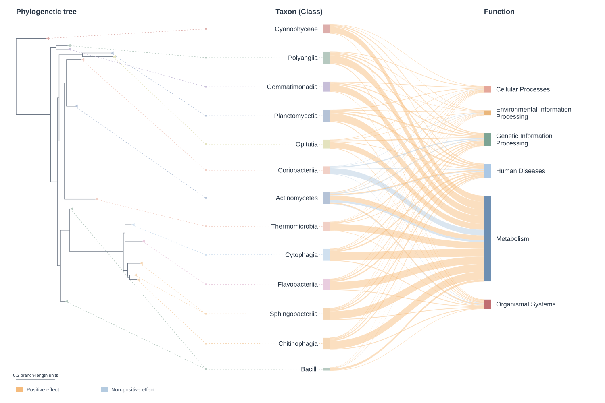
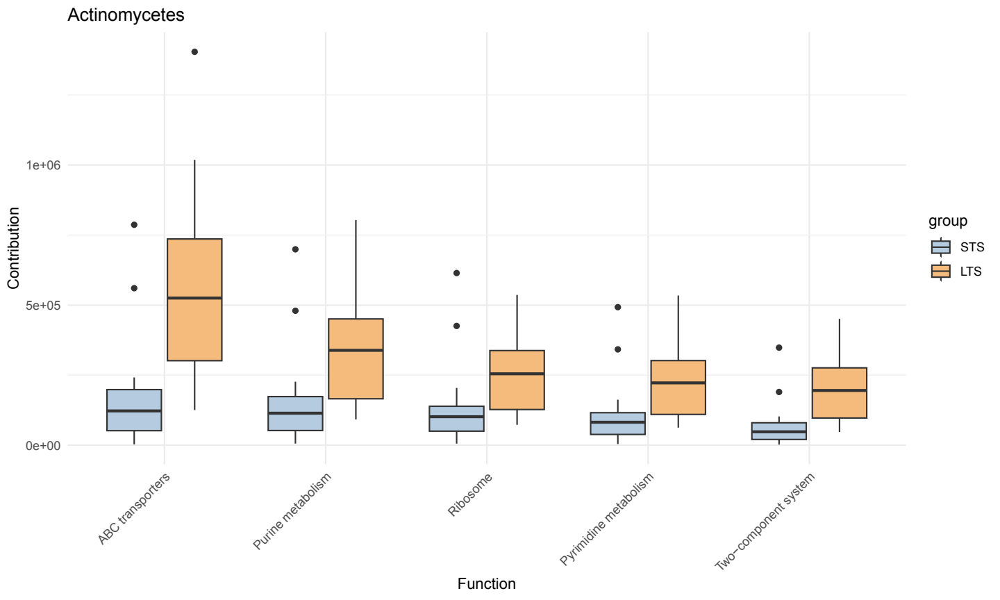
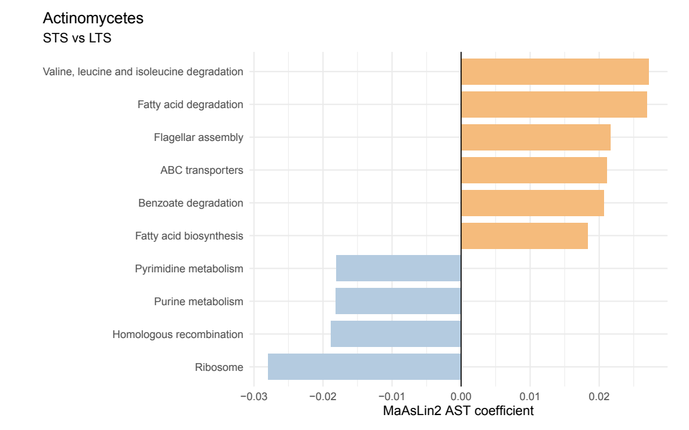
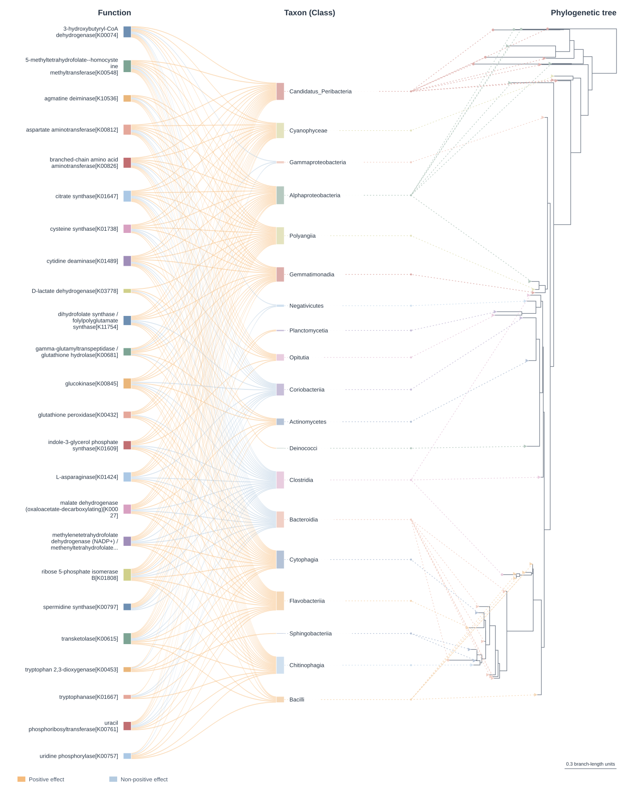
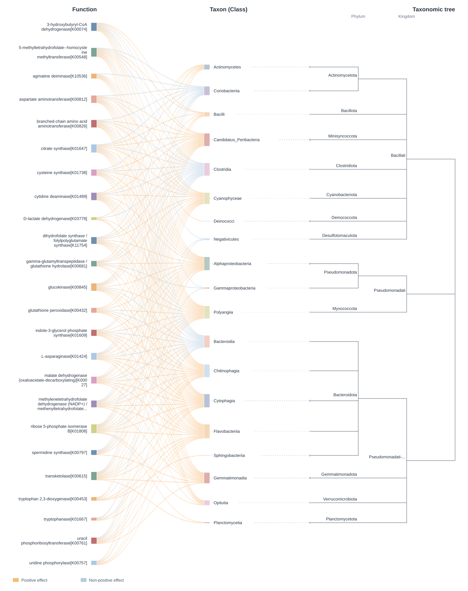
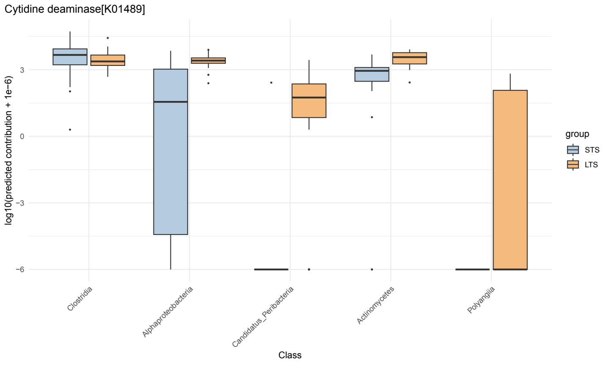
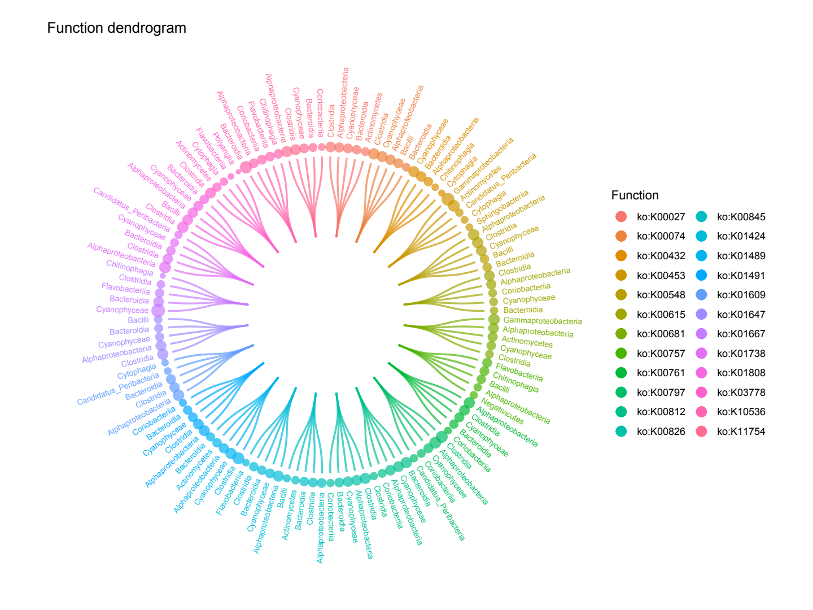
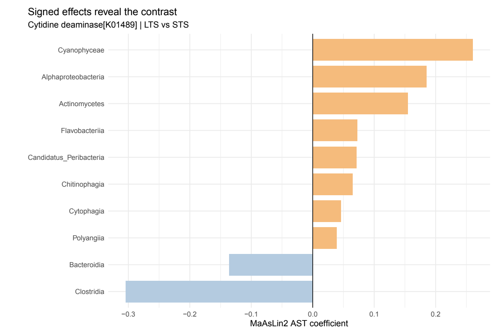

Demonstration Study (Stratified)
demonstration-stratified.RmdA community total can hide the contributors behind a functional difference. Here we follow those contributors at Class level, using a smaller taxon set to keep the study-sized analysis and figures practical.
Start with Study data and downloads. Use the same R project folder as Standard. Class aggregation applies to this contributor analysis; Standard continues to describe pooled community profiles.
Choose the taxonomic resolution
Set rank before fitting and reuse the same rank for
every plot. The shared analysis and visualization workflow supports
Phylum, Class, Order,
Family, Genus and Species when
that column contains usable annotations. In these downloaded inputs,
Species is entirely unassigned, so Genus is the deepest usable rank. The
ASV phylogeny remains an ASV tree at every aggregation level.
The demonstration uses Class to reduce the number of
fitted tables and make the networks easier to inspect. Changing the rank
requires refitting both analysis directions; changing only a legend
cannot change the aggregation.
1. Prepare the data
library(MicroFun)
library(phyloseq)
stopifnot(requireNamespace("vegan", quietly = TRUE),
getNamespaceVersion("vegan") == package_version("2.7.2"))
data_dir <- normalizePath("MicroFun_demonstration_data", mustWork = TRUE)
source(file.path(data_dir, "assemble-data.R"), local = new.env(), chdir = TRUE)
study <- new.env()
load(file.path(data_dir, "phyloseq_asv.RData"), envir = study)
ps <- prune_samples(sample_data(study$ps)$Cohort == "MDA", study$ps)
ps <- prune_taxa(taxa_sums(ps) > 0, ps)
strat_path <- file.path(data_dir, "stratified", "KO_contrib.tsv.gz")
group_col <- "group"
rank <- "Class"
reference <- "STS"
target <- "LTS"
study_tree <- phy_tree(ps)
out <- paste0("MicroFun_study_figures_", rank)
dir.create(out, recursive = TRUE, showWarnings = FALSE)
stopifnot(file.exists(strat_path))
hierarchy <- c("Kingdom", "Phylum", "Class", "Order", "Family", "Genus", "Species")
taxonomy_rows <- as.data.frame(as(tax_table(ps), "matrix"))
stopifnot(rank %in% hierarchy, rank %in% names(taxonomy_rows))
valid_label <- !is.na(taxonomy_rows[[rank]]) & nzchar(taxonomy_rows[[rank]])
stopifnot(any(valid_label))
parent_ranks <- head(hierarchy, match(rank, hierarchy) - 1L)
lineage_ranks <- intersect(c(parent_ranks, rank), names(taxonomy_rows))
lineage_rows <- unique(taxonomy_rows[valid_label, lineage_ranks, drop = FALSE])
lineage_counts <- table(lineage_rows[[rank]])
ambiguous_taxa <- names(lineage_counts[lineage_counts > 1L])
# Keep direction-specific selections separate.
excluded_taxa_centered_classes <- c("Alphaproteobacteria", "Candidatus_Peribacteria")
plot_taxa <- setdiff(unique(taxonomy_rows[[rank]][valid_label]), ambiguous_taxa)
taxa_centered_exclusions <- if (rank == "Class") excluded_taxa_centered_classes else character(0)
taxa_centered_selection <- setdiff(plot_taxa, taxa_centered_exclusions)
meta <- data.frame(sample_data(ps))
table(meta[[group_col]])Keep the ASV-level phyloseq object intact. MicroFun aggregates its contributions to the selected rank and uses the original identifiers for taxonomy and tree matching. The KO contribution file is the same reconstructed file used throughout this page.
Direction-specific selections in this demonstration
The taxon-centered example selects classes and temporarily omits Alphaproteobacteria and Candidatus_Peribacteria from its displayed taxon set. The function-centered example instead selects candidate KOs and retains these classes as contributors. Keep those selections separate when moving between the two directions.
Alphaproteobacteria is omitted from the taxon-centered example to limit organelle-associated signals in that selected view. Mitochondrial reads can occur in tissue 16S data, but Alphaproteobacteria is not synonymous with mitochondria. The downloaded taxonomy contains both mitochondrial assignments and genuine bacterial lineages within this class. This broad example selection also omits genuine bacteria. For an independent study, inspect ASV-level organelle assignments and apply appropriate upstream quality control. See the organelle-read study.
Candidatus_Peribacteria occupies a relatively isolated position in the phylogenetic tree used for this example. The authors temporarily omit it from the taxon-centered display to keep that example focused and readable. This is a presentation choice, not a claim that the tree is incorrect or that the class is contaminated or has invalid functional predictions. It remains available as a contributor in the function-centered example.
The complete fitted results are saved separately. These direction-specific display selections do not modify the downloaded inputs or remove taxa from the original fitted comparison.
2. Taxon-centered analysis and visualization
This direction asks which predicted pathways differ within each class. KO contributions are aggregated with the bundled KO-to-KEGG membership map. Pathway annotation needs a KEGG connection; academic REST access requires no API key. Other backends are described in Differential analysis options.
chosen_method <- "Maaslin2"
result_taxa_all <- pathway_sdaa(
stratified_path = strat_path, physeq = ps,
taxon_level = rank, group = group_col,
direction = "taxa", pathway = "KO",
daa_method = chosen_method, reference = reference,
p.adjust.method = "BH", threshold = 0.05
)
saveRDS(result_taxa_all, file.path(out, "sdaa_taxa_all.rds"))
result_taxa <- result_taxa_all[intersect(names(result_taxa_all), taxa_centered_selection)]
attr(result_taxa, "microfun") <- attr(result_taxa_all, "microfun")
saveRDS(result_taxa, file.path(out, "sdaa_taxa.rds"))
available_taxa <- names(result_taxa)[vapply(result_taxa, nrow, integer(1)) > 0L]
stopifnot(length(available_taxa) > 0L)
selected_taxon <- if ("Actinomycetes" %in% available_taxa) "Actinomycetes" else available_taxa[1]
head(result_taxa[[selected_taxon]])Sankey diagrams follow the selected associations
p_tax_taxonomy <- tax2fun_sankey(result_taxa, tree_mode = "taxonomy", physeq = ps)
save_sankey(p_tax_taxonomy, file.path(out, "tax2fun_taxonomy.html"))
p_tax_phylogeny <- tax2fun_sankey(
result_taxa, tree_mode = "phylogeny", physeq = ps, phylo_tree = study_tree
)
save_sankey(p_tax_phylogeny, file.path(out, "tax2fun_phylogeny.html"))
All taxon-centered figures on this page reuse the selected
result_taxa list. Follow each ribbon from a displayed class
to a functional category. Width counts selected associations, while the
side tree provides classification context. A large bundle identifies a
concentration of displayed relationships, rather than a direct
measurement of abundance.
Compare the ASV phylogeny view

p_tax_plain <- tax2fun_sankey(result_taxa, tree_mode = "none")
save_sankey(p_tax_plain, file.path(out, "tax2fun_draggable.html"), selfcontained = FALSE)Drag nodes vertically to arrange the view. Keep the adjacent
_files folder with exported HTML. Browser layout changes do
not alter the fitted results or automatically persist back to R. Open the
diagram.
Chord diagrams add contribution weights
p_tax_chord <- tax2fun_chord(
result_taxa, strat_path, ps, group = group_col,
contrast = c(reference, target), max_functions_per_taxon = 10, draw = FALSE
)
save_chord(p_tax_chord, file.path(out, "tax2fun_chord_top10.html"))
chord_taxa <- head(unique(p_tax_chord$links$taxon), 3L)
p_tax_chord_focus <- tax2fun_chord(
result_taxa, strat_path, ps, group = group_col,
contrast = c(reference, target), taxa_list = chord_taxa,
max_functions_per_taxon = 10, draw = FALSE
)
save_chord(p_tax_chord_focus, file.path(out, "tax2fun_chord_focus.pdf"))Ribbon widths show balanced mean predicted contributions, giving the
two group means equal weight. Colour describes effect direction and
outer bars show absolute model effects. The preview retains up to ten
functions per class, ranked by contribution. Set
max_functions_per_taxon = Inf for a full HTML overview,
then select a smaller set for PDF. Open the
Chord and its legends.
Inspect contributions within Actinomycetes
result_taxa_box <- result_taxa[selected_taxon]
z <- result_taxa_box[[selected_taxon]]
box_functions <- intersect(c("ko02010", "ko00230", "ko03010", "ko00240", "ko02020"), z$feature)
if (!length(box_functions)) box_functions <- head(z$feature[order(z$p_adjust)], 5L)
result_taxa_box[[selected_taxon]] <- z[match(box_functions, z$feature), , drop = FALSE]
attr(result_taxa_box, "microfun") <- attr(result_taxa, "microfun")
tax_boxes <- tax2fun_box(strat_path, result_taxa_box, ps, group = group_col)
p_tax_box <- tax_boxes[[selected_taxon]]
ggplot2::ggsave(file.path(out, "tax2fun_box_top5.pdf"), p_tax_box, width = 10, height = 6)
Compare the group distributions for the selected class rather than reading only the summary connections. Each pathway has its own contribution scale and variability. The panel selects ABC transporters, purine metabolism, ribosome, pyrimidine metabolism and two-component systems from the fitted results.
Dendrogram overview at Class level
p_tax_overview <- tax2fun_dendro(
result_taxa, taxon_level = rank, top_n_per_taxon = 5,
label_size = 2, wrap_width = 36
)$plot
ggplot2::ggsave(file.path(out, paste0("tax2fun_dendrogram_", tolower(rank), ".svg")),
p_tax_overview, width = 14, height = 13, bg = "white")
Branches organize the displayed classes and their selected functions; point size encodes absolute model effect. The view shows up to five functions per class. It summarizes associations and is not an evolutionary tree. Open the full-size diagram.
Signed effects within the selected class
tax_effects <- tax2fun_logfc(result_taxa, top_n = 10)
p_tax_effect <- tax_effects[[selected_taxon]] + ggplot2::labs(y = "MaAsLin2 AST coefficient")
ggplot2::ggsave(file.path(out, "tax2fun_effect.pdf"), p_tax_effect, width = 9, height = 6)
Positive values indicate a positive LTS-versus-STS effect under the fitted model. The axis shows MaAsLin2 AST coefficients. Use the contribution distributions alongside these effects when choosing relationships to discuss.
3. Function-centered analysis of selected KOs
The example targets 24 KOs selected for possible relevance to pancreatic cancer and tumor-associated microbial metabolism. This is a biological-interest set for exploration, not a list of established disease biomarkers. It spans nucleotide salvage, tryptophan and amino-acid metabolism, redox/glutathione processes, polyamines, one-carbon metabolism and central carbon metabolism. Download the selected KO list.
K01489 encodes cytidine deaminase. Geller and colleagues linked a long bacterial cytidine-deaminase isoform to gemcitabine metabolism and resistance. This makes K01489 a motivated candidate for demonstration, but a predicted KO does not identify the relevant isoform, demonstrate expression, or establish drug resistance in these samples.
Select candidate KOs before fitting to keep the example practical. Removing the KO filter to fit the complete library starts from 8,881 functions and can take much longer.
ko_candidates <- c("K00027", "K00074", "K00432", "K00453", "K00548", "K00615", "K00681", "K00757", "K00761", "K00797", "K00812", "K00826", "K00845", "K01424", "K01489", "K01491", "K01609", "K01647", "K01667", "K01738", "K01808", "K03778", "K10536", "K11754")
contrib <- data.table::fread(
strat_path, select = c("sample", "taxon", "function", "taxon_function_abun")
)
contrib[["function"]] <- sub("^ko:", "", contrib[["function"]], ignore.case = TRUE)
contrib <- contrib[contrib[["function"]] %in% ko_candidates &
contrib$sample %in% sample_names(ps), ]
fun_strat_path <- file.path(out, "selected_KO_contrib.tsv.gz")
data.table::fwrite(contrib, fun_strat_path, sep = "\t", compress = "gzip")
rm(contrib)
result_fun_all <- pathway_sdaa(
stratified_path = fun_strat_path, physeq = ps,
taxon_level = rank, group = group_col,
direction = "function", pathway = "KO", daa_method = chosen_method,
reference = reference, p.adjust.method = "BH", threshold = 0.05
)
# Restore taxonomy labels changed to syntactic names by the modeling backend.
taxon_labels <- unique(taxonomy_rows[[rank]][valid_label])
model_labels <- make.names(taxon_labels)
stopifnot(!anyDuplicated(model_labels))
for (function_id in names(result_fun_all)) {
z <- result_fun_all[[function_id]]
label_index <- match(z$feature, model_labels)
already_original <- z$feature %in% taxon_labels
stopifnot(all(already_original | !is.na(label_index)))
z$feature[!already_original] <- taxon_labels[label_index[!already_original]]
result_fun_all[[function_id]] <- z
}
saveRDS(result_fun_all, file.path(out, "sdaa_function_all.rds"))
# Function-centered selection is by KO, retaining all fitted class contributors.
result_fun <- result_fun_all
saveRDS(result_fun, file.path(out, "sdaa_function.rds"))
available_functions <- names(result_fun)[vapply(result_fun, nrow, integer(1)) > 0L]
functions_of_interest <- intersect(ko_candidates, available_functions)
stopifnot(length(functions_of_interest) > 0L)
result_fun_plot <- result_fun[functions_of_interest]
attr(result_fun_plot, "microfun") <- attr(result_fun, "microfun")
selected_function <- "K01489"
stopifnot(selected_function %in% functions_of_interest)The output file selected_KO_contrib.tsv.gz is created by
this code inside the figure/result folder; it is not an additional
required download. Only candidates with retained results enter the
displayed list. Keep the result attribute when subsetting so rank,
contrast and contribution settings remain consistent.
Sankey views of the candidate functions
p_fun_phylogeny <- fun2tax_sankey(
result_fun_plot, pathway = "KO", group_functions = FALSE,
tree_mode = "phylogeny", physeq = ps, phylo_tree = study_tree
)
save_sankey(p_fun_phylogeny, file.path(out, "fun2tax_phylogeny.html"))
p_fun_taxonomy <- fun2tax_sankey(
result_fun_plot, pathway = "KO", group_functions = FALSE,
tree_mode = "taxonomy", physeq = ps
)
save_sankey(p_fun_taxonomy, file.path(out, "fun2tax_taxonomy.html"))
Follow a candidate KO to its contributing classes. Ribbon width counts displayed associations and the tree provides ASV context. These links concern predicted functions and do not establish a mechanism in the tumor.
Compare the taxonomy view

p_fun_plain <- fun2tax_sankey(result_fun_plot, pathway = "KO", group_functions = FALSE, tree_mode = "none")
save_sankey(p_fun_plain, file.path(out, "fun2tax_none.html"), selfcontained = FALSE)Drag nodes to follow functions or classes of interest. Open the diagram.
Chord contributions for the selected KOs
p_fun_chord <- fun2tax_chord(
result_fun_plot, fun_strat_path, ps, group = group_col,
contrast = c(reference, target), functions = functions_of_interest, draw = FALSE
)
save_chord(p_fun_chord, file.path(out, "fun2tax_chord.html"))
p_fun_chord_focus <- fun2tax_chord(
result_fun_plot, fun_strat_path, ps, group = group_col,
contrast = c(reference, target), functions = selected_function,
max_taxa_per_function = 5, draw = FALSE
)
save_chord(p_fun_chord_focus, file.path(out, "fun2tax_chord_focus.pdf"))Read width as balanced mean predicted contribution, colour as effect direction, and the outer bar as absolute model effect. The focused PDF selects K01489 and up to five contributors. Open the Chord and its legends.
K01489 contribution distributions
result_fun_box <- result_fun_plot[selected_function]
z <- result_fun_box[[selected_function]]
result_fun_box[[selected_function]] <- head(z[order(z$p_adjust), , drop = FALSE], 5L)
attr(result_fun_box, "microfun") <- attr(result_fun_plot, "microfun")
fun_boxes <- fun2tax_box(fun_strat_path, result_fun_box, ps, group = group_col,
pathway = "KO", group_functions = FALSE)
p_fun_box <- fun_boxes[[selected_function]]
ggplot2::ggsave(file.path(out, paste0(selected_function, "_boxplot_top5.pdf")), p_fun_box, width = 10, height = 6)
Compare spread and overlap within each class. The y-axis is
log10(contribution + 1e-6), which makes different
contribution scales visible. This is a distributional view of predicted
contribution, not a measurement of drug metabolism.
Candidate-KO association dendrogram
p_fun_dendro <- fun2tax_dendro(result_fun_plot, top_n_per_function = 5,
label_size = 2.6, wrap_width = 20)$plot
p_fun_dendro <- p_fun_dendro + ggplot2::coord_fixed(
xlim = c(-1.6, 1.6), ylim = c(-1.6, 1.6), clip = "off"
)
ggplot2::ggsave(file.path(out, "fun2tax_dendrogram.pdf"), p_fun_dendro, width = 14, height = 11)
Each functional branch shows up to five class associations, with point size representing absolute model effect. The shared classes help compare contributor patterns across the candidate functions; branch proximity is not evolutionary distance.
Signed effects for K01489
fun_effects <- fun2tax_logfc(result_fun_plot, top_n = 10)
p_fun_effect <- fun_effects[[selected_function]] + ggplot2::labs(y = "MaAsLin2 AST coefficient")
ggplot2::ggsave(file.path(out, paste0(selected_function, "_signed_effects_top10.pdf")), p_fun_effect, width = 9, height = 6)
Interpret the direction using STS as reference and LTS as target. These associations can motivate a closer look at contributors or independent validation; the KO prediction does not establish a resistance mechanism.